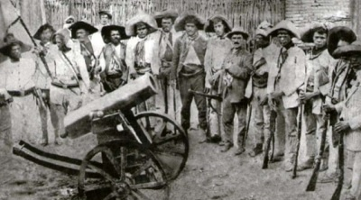
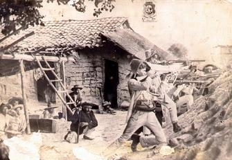

O Ceará foi formado inicialmente por índios com sua própria cultura e que depois foram catequizados/batizados pelos jesuítas portugueses, após grande resistência dos índios que viviam nas matas. O povoamento do território foi e tem sido bastante influenciado pela falta do fenômeno natural da chuva que nos dias atuais, dificulta na plantação e criação de animais.
O desenvolvimento independente do Ceará começaria apenas depois de sua separação de Pernambuco em 1799, e sua história foi sempre marcada por lutas políticas e movimentos armados. Essa instabilidade prolongou-se durante o Império e a Primeira República, normalizando-se depois da reconstitucionalização do País em 1945. As secas, os conturbados fatores sociais e econômicos do Estado acarretaram eventos importantes na história desse povo, como o cangaço, os movimentos messiânicos, a emigração para à Amazônia e para outros Estados, inclusive os do Sudeste do Brasil. Historicamente o Ceará tem passado por grandes transformações desde a década de 1950, progressivamente se tornando um Estado predominantemente urbano, mais industrializado e com crescente desigualdade regional e de renda.
As terras atualmente pertencentes ao Ceará foram doadas, em 1535, a Antônio Cardoso de Barros, mas este não se interessou em colonizá-las e nem sequer chegou a visitar a capitania, embora tivesse ocupado o cargo de provedor-mor da Bahia no governo geral de Tomé de Sousa. Cardoso de Barros, inclusive, faleceu em 1556, ao lado do primeiro bispo do Brasil dom Pero Fernandes Sardinha, devorado pelos índios Caetés, após um naufrágio na costa de Alagoas. A primeira tentativa séria de colonização portuguesa ocorre com Pero Coelho de Sousa, que lidera a primeira bandeira feita em 1603, demonstrando por isso certo interesse de Portugal em colonizar o Ceará.